Rastan goes through seven rounds. Each stage is a grid of 256 × 176 pixel screens, 11 rows of 16 blocks of 16 × 16, and you go from one to the next by leaving through an edge (p00:5367).
Seven rows of nine blocks (p00:5189) with their palette (p00:5207), the Taito sign (p00:5227) and two lines of text in the game's font.
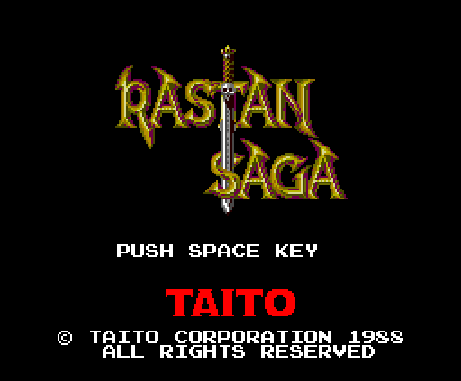
There are 24 stage records of 16 bytes (p02:9035): the screen table, the block table, the size, the starting screen, the two backgrounds, the palette, the map bank and where Rastan appears. The round comes from the stage (p00:566C):
| round | stages | what is there |
|---|---|---|
| 1-5 | three each | the outdoors, the castle and the boss room |
| 6 | 0x0F, 0x10 | two stages and no boss: 0x11 is skipped |
| 7 | 0x12-0x16 | five stages that repeat the five bosses |
0x17 is the ending. In all, 257 screens; 255 in the 22 stages that are played.
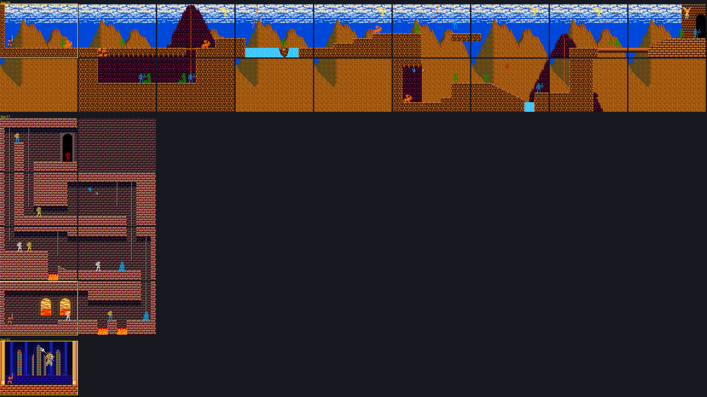
Round 1: the outdoors, the castle and the boss room, with the enemies where they come out (p00:58F9), the boss where its routine puts it (p04:8016) and Rastan on the starting screen, framed.
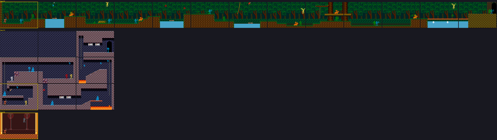
Round 2: stages 0x03, 0x04 and 0x05.
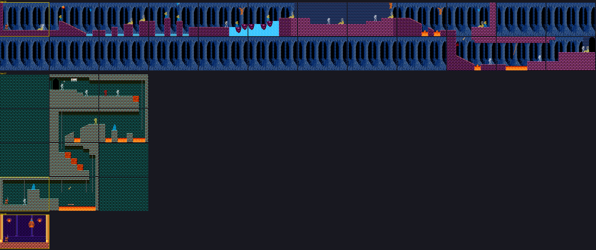
Round 3: stages 0x06, 0x07 and 0x08.
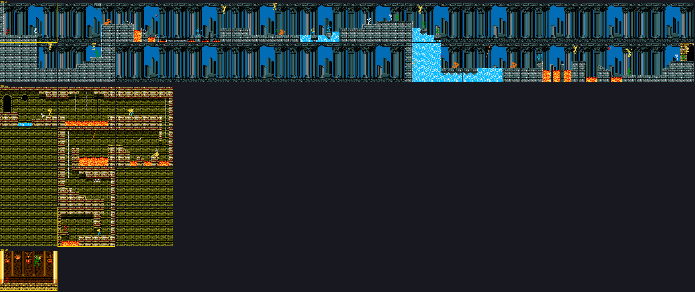
Round 4: stages 0x09, 0x0A and 0x0B.
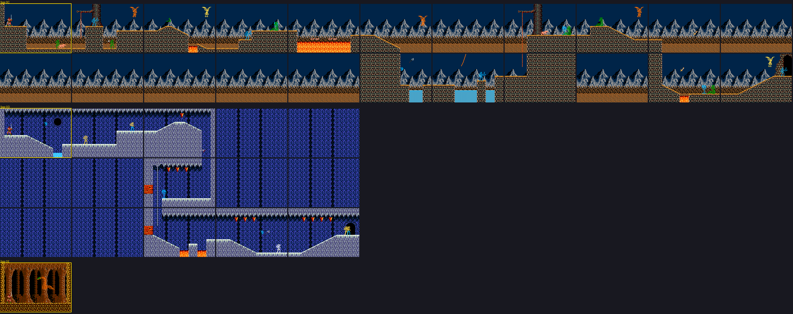
Round 5: stages 0x0C, 0x0D and 0x0E.
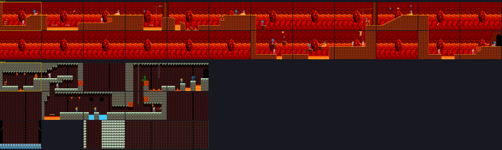
Round 6: stages 0x0F and 0x10.
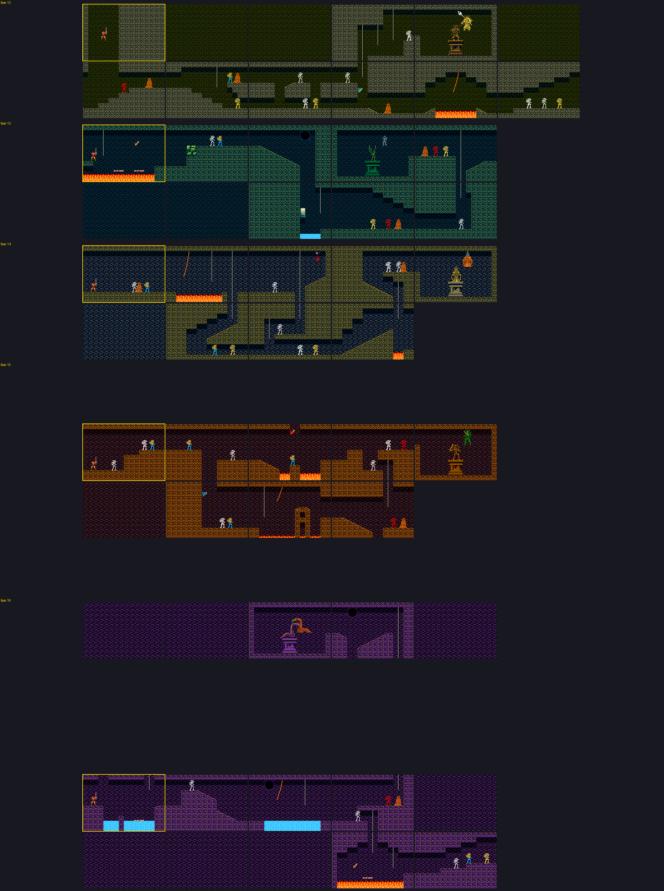
Round 7: five stages that repeat the five bosses, each on a given screen (p04:8BF4).
An opaque background for the top row and another for the rest, the list of foreground blocks, the columns that stretch downwards (p00:55C5) and, at the end, the actors: up to 8 enemies, 3 objects and a special block (p00:58F9). The lists are packed: 0xD0 repeats a block, EF EF ends.
Three sprite layers (p06:6134): the body (p06:639F), the second layer (p06:64B3) and the weapon, which comes from one of four tables (p06:6397) depending on what he carries. His 92 poses have 48 different combinations.
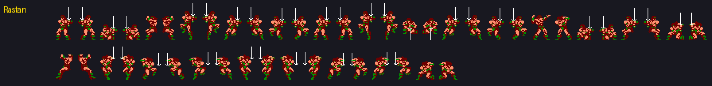
37 types (p00:4C68), each with its list of poses; the definitions of types 0x01-0x17 are in bank 30 and the rest in bank 26. An enemy in a screen's list is a code that p00:57D3 turns into type and pose; with bit 7 set, it is a piece of animated scenery.
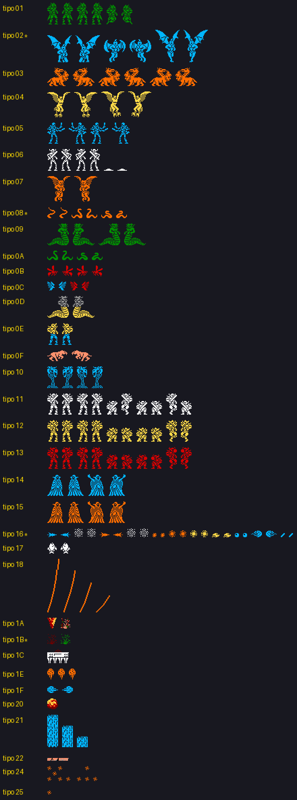
Boss rooms have no actors in their list: each boss is created by its routine in p04 (p04:8016, 8262, 848E, 8799 and 89CE), types 1 to 5, with their poses at p03:7F76, their patterns in bank 8, and 320, 320, 160, 320 and 400 of life (measured). When one dies it becomes type 7, the death (p03:7FDA), and its points are added: 500, 1000, 1500, 2000 and 2500 (p07:9709). In round 7, each comes out on a given screen (p04:8BF4-8C4B).
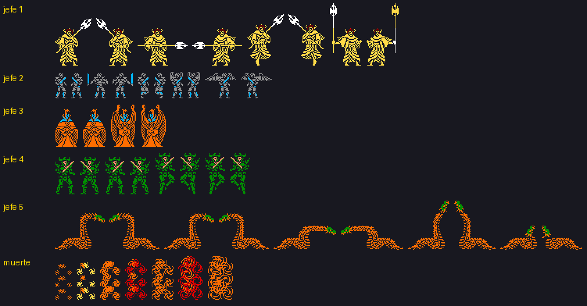
Stage 0x17: music 5, the screen cleared and the text at p04:8D01 scrolling up line by line; then the Taito sign, and the game stays there.
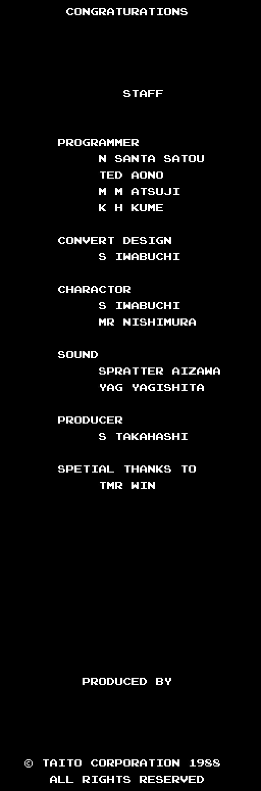